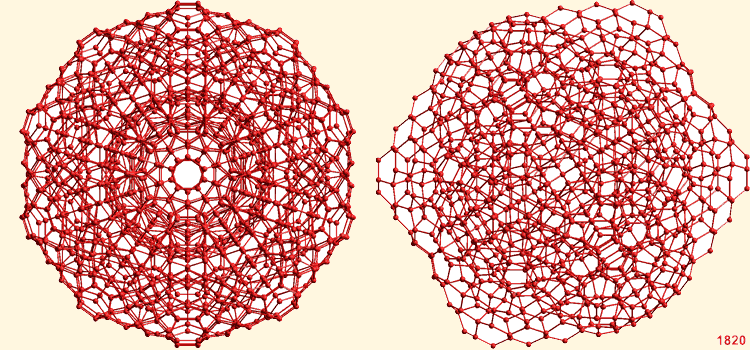

The (H2O)100 cluster.
Oxygens in the central dodecahedron are blue
 (H2O)100 stranded clusters
(H2O)100 stranded clusters
 (H2O)280 super strand
(H2O)280 super strand
 (H2O)1820 super-cluster
(H2O)1820 super-cluster
'Art is born of the observation and
investigation of nature'
Marcus Tullius Cicero 106 B.C. - 43 B.C.
The smallest water cluster that may be stabilized by small hydrophobic molecules or kosmotropic ions is the (H2O)100 cluster (≈ 1 nm radius, see right or Java) that forms the central part of the (H2O)280 icosahedral cluster and as found in the cavity-encapsulated nanodrop of water in a polyoxomolybdate [417]. In this diagram, the oxygen atoms in the central (H2O)20 dodecahedron are colored blue. This cluster has been proposed as the inner core in water coherence domains [2956] and agrees with the estimated radius of the (spherical) low-density amorphous ice (LDA) seed within a high-density amorphous ice (HDA) matrix at ≈ 0.8 nm [3162],
The water clusters show increased stabilization in the order (H2O)20 < (H2O)100< (H2O)280 [1619]. However, the (H2O)100 clusters are somewhat stable as their hydrogen bonds are unstrained. Such clusters can form chains by linking through their outer pentameric (H2O)5 rings (forming partial structures from the ES (H2O)280 icosahedral cluster. Such partial structures involve fewer slightly strained hydrogen bonds present in the complete ES (H2O)280 structure. They can form extensive networks such as the ordered network shown below. For clarity, only the oxygen atoms are shown.
A matrix of (H2O)100 icosahedra
Such regular matrices are not generally expected. This structure is given as an example of some of the links available. However, randomly linked networks are possible and may be formed transiently at ambient temperatures and below. They would not be expected to be formed from complete (H2O)100 cluster units, nor would they be distinct as other water molecules would hydrogen bond to the edges and faces individually and in clusters. (see Jmol, 850 KB)
[Back to Top  ]
]
(H2O)280 icosahedral clusters may also form strands, albeit containing some more strained hydrogen bonds than the (H2O)100 strands. A super strand of eight water (H2O)280 icosahedra, showing the tessellation ability, is illustrated below. Eight complete but overlapping icosahedral clusters form this strand-like structure containing 1750 water molecules. For clarity, only the oxygen atoms are shown (for interactive structures, see Jmol).
A super-strand of eight water icosahedra
This is shown as an indicative example of the type of structure expected as water is (super)cooled, so encouraging the expanded icosahedra (ES) structures to increase their degree of structuring. These structures are far less strained than more-symmetric supercluster structuring, and are as expected in the related low-energy minimal polytetrahedral Dzugutov clusters where they are stabilized by the presence of high barriers between potential energy minimal structures, of particular importance at low temperatures [295]. Actual icosahedral strands are unlikely to be complete (as pictured), but to contain partial additions or deletions and be of various lengths and shapes, including partial or complete (H2O)100 strands. The presence of such clusters is, in principle, in agreement with computer simulation studies [216]. They may explain the properties of deeply-supercooled water [1840] as it is in agreement with such water being a good solvent for inert gas (Xenon) atoms, which fit well into the dodecahedral clathrate sites, but a very poor solvent for salt (LiCl) [1120], which would have to disrupt the hydrogen-bonding. It would also possess the very low excess entropy and enthalpy of crystallization found [1840].
Other liquids (similarly to deeply-supercooled water) have been found to solidify on heating. An aqueous solution of α-cyclodextrin and 4-methylpyridine is liquid below 45 °C then (reversibly) freezes (before 75 °C) to melt again at above 100 °C [1026]. The rationale is that the liquid phase contains mainly intramolecular hydrogen bonds, but the solid phase contains intermolecular hydrogen bonds, a similar underlying principle to that proposal above.
[Back to Top  ]
]
The super-cluster of thirteen water icosahedra
A super-cluster of thirteen water icosahedra, showing the tessellation ability. Thirteen complete but overlapping icosahedral clusters form this super-icosahedral structure (an icosahedron of interpenetrating icosahedra; that is, a triacontahedron) containing 1820 water molecules (diameter ≈ 5.6 nm, an outer shell of an additional 360 water molecules is also shown). This structure is for illustrative purposes only of the type of super-clustering possible. It is not likely to be a preferred minimum-energy structure due to the increased strain on full tessellation [295]; However, the icosahedral structures can form part of fully tessellated clathrate I-type structures.
The volume of the central (H2O)280 icosahedron is about 1/4 of the volume of a single gaseous H2O molecule. Although there is presently no evidence for this and the mechanism of formation is unclear, the stabilization offered by the surrounding optimal hydrogen-bonding may indicate a possible route to bulk nanobubble (that is, nanocavity) formation. Only the oxygen atoms are shown (for interactive structures see: Jmol).
The spherical coordinates and the spherical shell radii of this structure are shown on other pages. Displayed below is a cartoon showing the layered structure of this super-cluster.
Water super-cluster layers; mouse over

[Back to Top  ]
]
Home | Site Index | Icosahedral water clusters | Evidence for icosahedral clusters Home | Site Index |
This page was established in 2003 and last updated by Martin Chaplin on 29 October, 2021